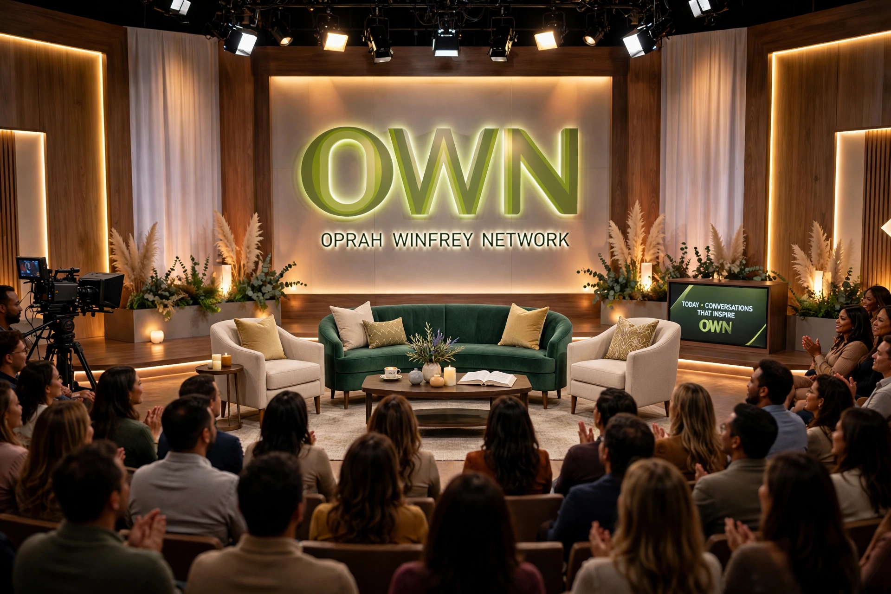

Oprah Winfrey Network (OWN) is an American multinational basic cable channel jointly owned by Warner Bros. Discovery and Harpo Studios. Launched on January 1, 2011, replacing the Discovery Health Channel, it is led by media personality Oprah Winfrey and features entertainment and lifestyle programming aimed principally at African-American audiences, plus reruns of talk programming.
| Oprah Winfrey Network | |
|---|---|
 The OWN logo | |
| Country | United States |
| Launched | January 1, 2011 |
| Replaced | Discovery Health Channel |
| Owners | Warner Bros. Discovery (majority); Harpo Studios |
| Headquarters | Los Angeles, California |
OWN grew out of Winfrey's earlier role as a co-founder of the Oxygen network, which she left when it was sold to NBCUniversal. Announced in 2008 as a joint venture between Discovery Communications and Harpo, the channel's launch was delayed until New Year's Day 2011, months before Winfrey ended her syndicated talk show. Early ratings disappointed; a management overhaul (with Winfrey becoming CEO and chief creative officer later in 2011) refocused programming around Winfrey-fronted series.
The network's fortunes improved with Winfrey's interviews (Oprah's Next Chapter, including a high-profile Lance Armstrong confession in 2013), a content partnership with Tyler Perry that produced hit dramas such as The Haves and the Have Nots (2013) and If Loving You Is Wrong, and acclaimed original series including Ava DuVernay's Queen Sugar (2016) and Greenleaf. In 2017 Discovery bought a larger controlling stake from Winfrey, who remained CEO of the network; ownership passed to Warner Bros. Discovery in the 2022 merger.